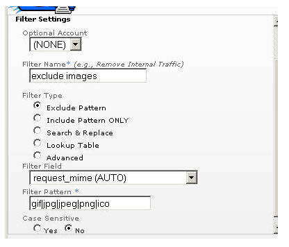
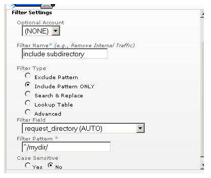

Filters voor uitsluiten en opnemen
Inleiding
Filters voor uitsluiten en opnemen worden ingesteld in de beheerinterface en toegepast in een logbestandsbron of profiel. Deze filters worden gebruikt om ongewenste treffers te verwijderen bij het verwerken van een logbestand. De filters gebruiken reguliere POSIX-expressies voor de vergelijking met gegevens in de velden van een treffer. Als u niet bekend bent met reguliere expressies, is het raadzaam het document 'Overzicht van reguliere expressies' in dit gedeelte te lezen voordat u doorgaat.
Hoe Urchin filters voor uitsluiten en opnemen gebruikt
Deze filters worden pas toegepast na de filters 'Zoeken en vervangen', 'Opzoektabel' en 'Geavanceerde filters'. De filters voor uitsluiten en opnemen worden na elkaar toegepast in Urchin. Als een filter voor uitsluiten wordt toegepast en het patroon overeenkomt, wordt de treffer verwijderd en gaat Urchin verder met de volgende treffer. Als het patroon niet overeenkomt, past in Urchin het volgende filter toe op die treffer. Dit houdt in dat u één filter voor uitsluiten kunt maken met meerdere patronen die worden gescheiden door '|' of dat u meerdere filters voor uitsluiten kunt maken met elk één patroon.
Filters voor opnemen worden op de omgekeerde manier toegepast. Als een filter voor opnemen wordt toegepast, wordt de treffer verwijderd wanneer het patroon niet overeenkomt met de gegevens. Als er meerdere filters voor opnemen worden toegepast, wordt de treffer alleen opgeslagen wanneer deze overeenkomt met elk toegepast filter voor opnemen. Om meerdere patronen voor een bepaald veld op te nemen, kunt u één filter voor opnemen maken dat alle afzonderlijke expressies bevat die worden gescheiden door '|'.
Filters voor uitsluiten en opnemen gebruiken

In de bovenstaande afbeelding zijn voor het filter voor uitsluiten een filterexpressie en een filterveld vereist. Tijdens de verwerking wordt de filterexpressie vergeleken met gegevens in het filterveld. Als deze overeenkomen, wordt de treffer verwijderd. Raadpleeg het artikel 'Filtervelden' voor een volledig overzicht van de beschikbare velden. Het bovenstaande voorbeeld laat zien hoe u afbeeldingstreffers kunt filteren door alle MIME-typen die overeenkomen met de extensie .gif, .jpg, .png, .jpeg en .ico te filteren. Deze lijst kan worden aangepast aan elk MIME-type.

In de bovenstaande afbeelding zijn voor het filter voor opnemen een filterexpressie en een filterveld vereist. Tijdens de verwerking wordt de filterexpressie vergeleken met gegevens in het filterveld. Als deze niet overeenkomen, wordt de treffer verwijderd. Raadpleeg het artikel 'Welke gegevens geven de filtervelden weer?' voor een volledig overzicht van de beschikbare velden. Het bovenstaande voorbeeld laat zien hoe u treffers kunt filteren op basis van de submap 'mydir' van het verzoek.
Besturingselementen
Met het besturingselement 'Hoofdlettergevoelig' kunt u aangeven of het filter hoofdlettergevoelig is.